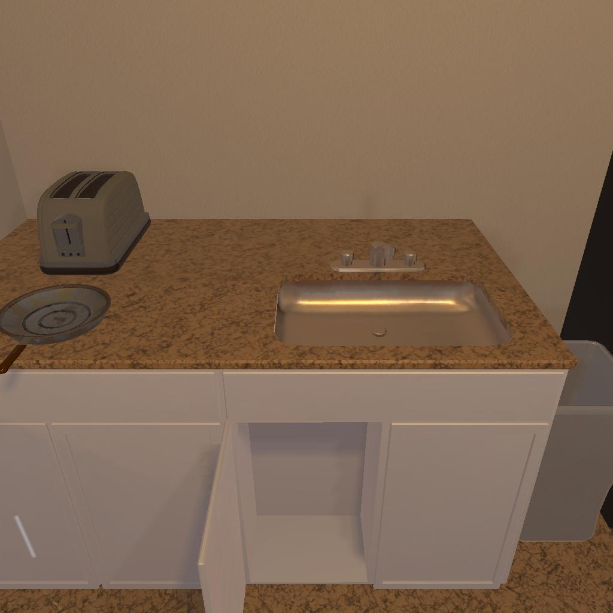

---------------------------------------------------------task: 13---------------------------------------------------------
--------------------------------------------------------------------------------------------------------------------------------------------------------------------
--------------------------------------------------------------------------------------------------------------------------------------------------------------------
Step:--------------------------------------------------------------------------6-------------------------------------------------------------------------------
----------------------------------------
VLM Prompt:
**Task**
Please perform as an embodied AI agent. Our final objective is to put a clean tomato in garbagecan. Below is the plan for completing the task, the current observation, alongside historical data and admissible actions for the next step. Please determine the best action for the next step!
**Plan**
Below is a detailed step-by-step plan to complete the task.
1. Find a tomato.
2. Pick up the tomato.
3. Find a sink or basin.
4. Clean the tomato with the sink or basin.
5. Find a garbage can.
6. Place the cleaned tomato in the garbage can.
**Current Observation**
Displayed is an image capturing the current position of the agent.
**History Information**
Displayed are the previous observations with their corresponding actions.
Current State 1:
1. Place: Kitchen
2. Step Index in Plan: 1
3. Objects: Sink basin, garbage can
4. Action: Go to fridge 1
Current State 2:
1. Place: Kitchen
2. Step Index in Plan: 1
3. Objects: None visible in the current observation
4. Action: Go to countertop 1
Current State 3:
1. Place: Kitchen
2. Step Index in Plan: 1
3. Objects: Tomato, Cabinets, Countertop, Fridge, Garbage Can, Toaster, Sink, Microwave, Drawers, Stove Burners, Coffee Machine, Dining Table, Plate, Pan, Bread
4. Action: Go to cabinet 1
Current State 4:
1. Place: Countertop 1
2. Step Index in Plan: 1
3. Objects: Toaster, Plate, Pan
4. Action: Go to countertop 2
Current State 5:
1. Place: Kitchen
2. Step Index in Plan: 1
3. Objects: Pot, Pan, Knife, Cup, Pepper Shaker
4. Action: Go to cabinet 3
Current State 6:
1. Place: Kitchen
2. Step Index in Plan: 1
3. Objects: Tomato, sink basin, cabinets
4. Action: Open cabinet 3
**Admissible Actions**
(1): go to countertop 1
(2): go to cabinet 1
(3): go to cabinet 2
(4): go to garbagecan 1
(5): go to cabinet 4
(6): go to toaster 1
(7): go to sinkbasin 1
(8): go to fridge 1
(9): go to sink 1
(10): go to cabinet 5
(11): go to microwave 1
(12): go to cabinet 6
(13): go to cabinet 7
(14): go to drawer 1
(15): go to stoveburner 1
(16): go to stoveburner 2
(17): go to cabinet 8
(18): go to drawer 2
(19): go to stoveburner 3
(20): go to stoveburner 4
(21): go to coffeemachine 1
(22): go to cabinet 9
(23): go to cabinet 10
(24): go to cabinet 11
(25): go to diningtable 1
(26): go to drawer 3
(27): close cabinet 3
(28): take pan 1 from cabinet 3
(29): take faucet 1 from cabinet 3
**Analysis Guideline**
1. Analyze the **History Information** and determine our current step in the plan and our current place.
2. List all visible objects related to the task in the current observation.
3. Analyze the objects in the current observation based on the history and the requirements for the current step, and then determine if we can complete the step with the current observation.
4. Analyze and decide on the most appropriate action to take.
5. Summarize the analysis using the following format: "Analysis: [The summarization of the analysis], The Most Appropriate Action: (i which is the integer.): [Selected action]"
**Notes**
1. We must complete each step of the plan in order and cannot skip steps when the previous ones are not finished.
2. For "Go to" actions listed as "go to xxx [n]", interpret this as there are n distinct actions available: "go to xxx 1", "go to xxx 2", ..., "go to xxx n". Select one specific action from these options instead of using "go to xxx [n]".
3. If receptacles such as drawers, cabinets, and so forth are closed in the current observation, we may try to open them.
4. Pay attention to synonyms and ensure clarity in the terms used.
5. If there is no history available, we are at the first step and the current place is "Unknown".
6. The most appropriate action must be in the **Admissible Actions**, and we cannot generate a new action that is not in the **Admissible Actions**.
**Answer**
Please select the most suitable action by following the **Analysis Guideline**, keeping the above **Notes** in mind.
----------------------------------------
----------------------------------------
VLM Response:
Analysis: Based on the History Information, we are currently at step 1 in the plan, which is to find a tomato. The current observation shows a sink basin, indicating that we are in the kitchen (Place: Kitchen). The visible objects related to the task are the sink basin and the garbage can. Since our current step is to find a tomato, and no tomato is visible in the current observation, we cannot complete the step with the current observation. Considering the history, we have previously encountered a tomato when we went to cabinet 1 (Current State 3). Therefore, the most appropriate action would be to return to cabinet 1 to find the tomato.
The Most Appropriate Action: (2): go to cabinet 1
----------------------------------------
----------------------------------------
>>> Refine VLM Response and Get Pure Action: go to cabinet 1
----------------------------------------
-----------------------------------------------------------------
Running time: 37.940850257873535 seconds
Total Money: 6.1171999999999995
-----------------------------------------------------------------
-----------------------------------------------------------------
Summarization Prompt:
**Context**
Analysis: Based on the History Information, we are currently at step 1 in the plan, which is to find a tomato. The current observation shows a sink basin, indicating that we are in the kitchen (Place: Kitchen). The visible objects related to the task are the sink basin and the garbage can. Since our current step is to find a tomato, and no tomato is visible in the current observation, we cannot complete the step with the current observation. Considering the history, we have previously encountered a tomato when we went to cabinet 1 (Current State 3). Therefore, the most appropriate action would be to return to cabinet 1 to find the tomato.
The Most Appropriate Action: (2): go to cabinet 1
**Summary Format**
1. Place: [Specify the current location]
2. Step Index in Plan: [Dispkay the current step number in the plan before taking the current action]
3. Objects: [List the objects relevant to the task]
4. Action: [Describe the most appropriate action without the "(x)" and keep the integer of the object]
Please analyze the **Context** and summarize the analysis using the **Summary Format**.
-----------------------------------------------------------------
-----------------------------------------------------------------
Summarization Response:
1. Place: Kitchen
2. Step Index in Plan: 1
3. Objects: Sink basin, Garbage can
4. Action: Go to cabinet 1
-----------------------------------------------------------------
-----------------------------------------------------------------
Text Observation:You arrive at loc 1. The cabinet 1 is closed.
-----------------------------------------------------------------
UNSUCCEED